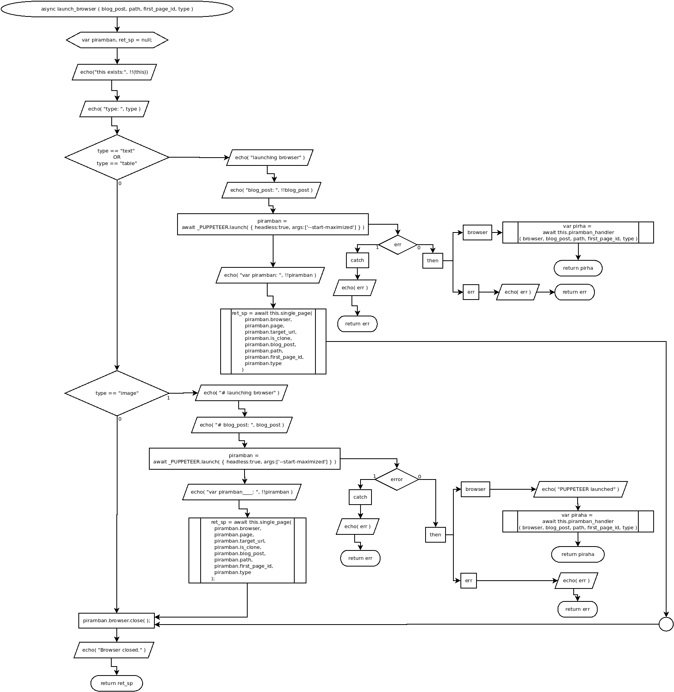

async launch_browser ( blog_post, path, first_page_id, type )
Flowchart

Code
async launch_browser ( blog_post, path, first_page_id, type ){
var piramban, ret_sp = null;
echo("this exists:", !!(this));
echo( "type: ", type );
if( type == "text" || type == "table" ){
//text or table handler
echo( "launching browser" );
echo( "blog_post: ", !!blog_post );
piramban = await _PUPPETEER.launch( { headless:false, args:['--start-maximized'] } )
.then(
async ( browser ) => { return await this.piramban_handler( browser, blog_post, path, first_page_id, type ) },
async ( err ) => {
echo( err );
return err;
} )
echo( "var piramban: ", !!piramban );
ret_sp = await this.single_page(
piramban.browser,
piramban.page,
piramban.target_url,
piramban.is_clone,
piramban.blog_post,
piramban.path,
piramban.first_page_id,
piramban.type
);
} else if( type=="image" ){
//image type handler
echo( "# launching browser" );
echo( "# blog_post: ", blog_post );
piramban = await _PUPPETEER.launch( { headless:false, args:['--start-maximized'] } )
.then(
async ( browser ) => {
echo( "PUPPETEER launched" );
var piraha = await this.piramban_handler( browser, blog_post, path, first_page_id, type );
return piraha;
},
async ( err ) => {
console.log( err );
} )
.catch( async ( err )=>{
echo( err );
return err;
} );
echo( "var piramban____: ", !!piramban );
ret_sp = await this.single_page(
piramban.browser,
piramban.page,
piramban.target_url,
piramban.is_clone,
piramban.blog_post,
piramban.path,
piramban.first_page_id,
piramban.type
);
}
//close browsing
piramban.browser.close( );
echo( "Browser closed." );
return ret_sp;
}
Refers to:
async piramban_handler( browser, blog_post, path, first_page_id, type )
async single_page ( browser, page, target_url, is_clone, blog_post, path, first_page_id, type )